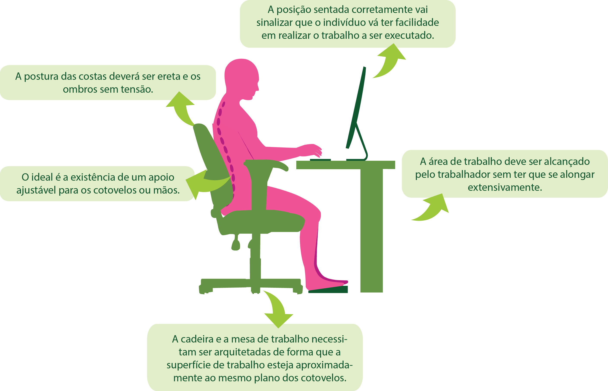

Permanecer por muito tempo sentado não é saudável, principalmente para as costas, o ideal é que ocorra uma diversidade de movimentos posturais nas tarefas executadas, de modo que o trabalhador não seja obrigado a ficar apenas sentado. A cadeira é primordial para o conforto do trabalhador, permitindo que esta dê mobilidade às posições das pernas e de trabalho.
